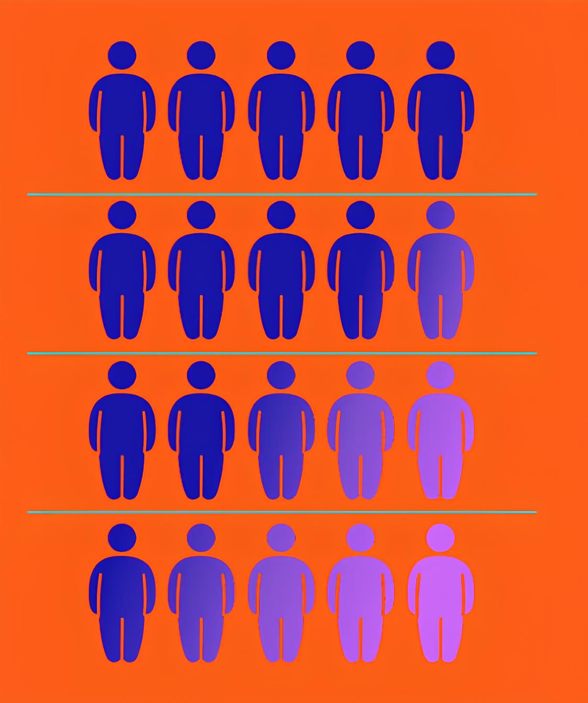

Aprender a lidar com seus erros é a chava para
transformá-los em acertos duradouros.

O StudyPack nasceu com a ideia de que os erros não devem
ser vistos como obstáculos, mas como aliados no processo
de aprendizagem. Em vez de simplesmente esquecer uma
questão errada ou repetir mecanicamente exercícios, você
passa a registrar, acompanhar e transformar cada erro em
conhecimento sólido.
Dentro do StudyPack, você cria sua própria "mochila de
erros": um espaço pessoal onde pode guardas questões que
errou, anotar dúvidas, adicionar links de materiais de estudo
ou até salvar imagens de exercícios. Cada item adicionado
permanece na sua mochila até que você prove para si mesmo
que realmente dominou aquele conteúdo.
A Mochila de Erros é um espaço
onde você registra todas as
questões que errou. Cada item
fica armazenado até que seja
revisado e acertado 3 vezes
seguidas. Se errar novamente, a
contagem recomeça. Assim,
você garante que o aprendizado
está realmente consolidado
antes de seguir em frente.
Ela serve como um mapa do seu
aprendizado, mostrando
exatamente onde você precisa
melhorar. Em vez de esquecer os
erros ou repeti-los como
oportunidades. A mochila
organiza seus pontos fracos e os
transforma em degraus para
alcançar seus objetivos.
Inclua seus erros na mochila sem
medo — cada questão registrada
é uma chance de evolução. Ao
revisitar e corrigir, você
desenvolve disciplina,
autoconhecimento e resiliência.
O verdadeiro aprendizado não
está em nunca errar, mas em ter
coragem de enfrentar os erros e
transformá-los em crescimento
real.